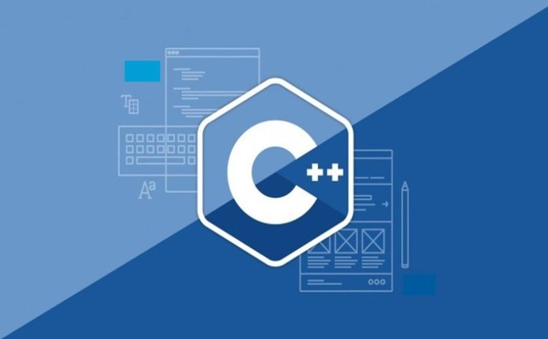

Why I prefer C++?
Why I prefer C++ programming language? Well this is the question which I even ask myself, as I too am not fully sure why I like it more than anything else... Well, one probable and highly convincing answer to all of you would be that since the time I came to know about programming, what was programming, what are its uses, etc., I had the knowledge of only one programming language C. I was so much without knowledge that, I even didn't knew that C++ was the incremented version of C, which is considered to be the parent language of all programming languages.
When I was in my 8th or 9th grade, we had a subject of Information Technology in our school, but there they taught only the hardware peripherals and socket connections, network topology, HTML, or mostly the services offered by Microsoft like MS-word, MS-powerpoint, MS-access, etc to name a few. Hence, I thought that the subjects related to IT were majorly centred around these basic things only. Little did I knew what was the underlying phenomena which made all these services possible...
In my 11th grade, I seriously started to learn C++ programming, as I had it as a major subject at that time. It was during that time only that I gained interest in problem solving and learnt all the basic programming concepts like variables, datatypes, loops, functions, structures, classes, inheritance, file handling, etc. Till date no other programming language has replaced C++ in my favourites list.
Published: 3rd Jul 2021
